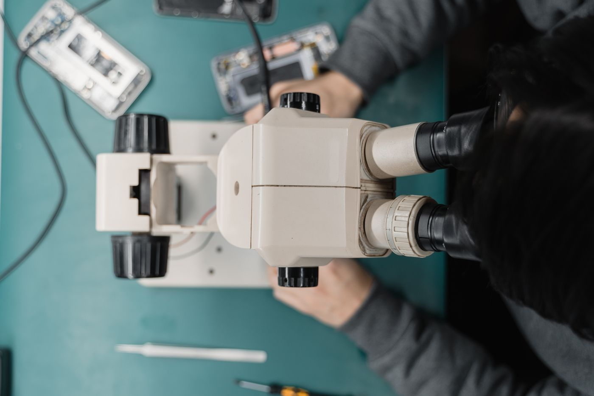

01
Screen & Device Repair
Displays, batteries, charging ports, cameras, speakers, buttons, liquid damage, consoles, and more.
Start a Repair →Device repair, without the runaround
GotCracked repairs phones, tablets, laptops, computers, and game consoles in Blacksburg, Virginia, serving Virginia Tech and the New River Valley with clear diagnostics and dependable service.
One repair partner for all your tech
Brands and platforms we service
Start With Your Device
Jump straight into the repair request with your device type already selected, or choose a free diagnostic if the problem is unclear.
Everything we do
From a simple cleaning to a custom gaming PC, we diagnose clearly, explain the options, and help you make the smartest next move.
Displays, batteries, charging ports, cameras, speakers, buttons, liquid damage, consoles, and more.
Start a Repair →Not sure what failed? We identify the likely cause and explain practical repair options before work begins.
Get a Diagnosis →Careful exterior, charge-port, speaker, vent, fan, and internal cleaning for eligible phones, computers, and consoles.
Book a Cleaning →Startup cleanup, updates, storage checks, performance review, and practical recommendations for a smoother system.
Tune Up My Computer →Planning, parts guidance, professional assembly, cable management, setup, testing, and upgrade paths.
Plan My Build →Threat cleanup, unwanted software removal, browser repair, security review, and steps to reduce reinfection.
Clean My Computer →We assess accessible drives and devices and attempt responsible recovery when appropriate. Results are never guaranteed.
Request an Evaluation →Restore dependable battery life on eligible phones, tablets, laptops, and other devices.
Replace My Battery →Computers & Custom Builds
From laptop cooling and storage work to complete custom systems, we inspect carefully, document the plan, and test the finished device.
Plan a Custom Build →Returning customer? Ask about frequent-repair savings on eligible services.
Common repair symptoms
Tell us what changed, what the device is doing, and when it started. You do not need to diagnose the failure yourself—we confirm the repair path before billable work begins.

Professional diagnostics
Screen damage, charging problems, heat, battery issues, and no-power faults can overlap. We document what is happening, inspect the device, and explain the practical next step.
Phones & tablets
Black spots, colored lines, flickering, dead touch areas, sharp glass, or spreading cracks are all good reasons to have the device inspected.
We identify which display components are affected and confirm the available repair options before work begins.
Battery & power
Battery wear and power faults can create similar symptoms, so we verify the cause before recommending replacement.
If a battery appears swollen or the device becomes unusually hot, stop using and charging it and have it evaluated promptly.
Laptops & computers
Cooling, storage, hardware, and software problems can feel very similar from the outside.
We look at the symptoms and overall system health, then explain whether cleaning, repair, upgrade, or software service makes sense.
Game consoles
We evaluate PlayStation, Xbox, Nintendo, handheld, and other console families for HDMI, power, storage, cooling, and controller-related problems.
Support depends on the model, failure, parts availability, and practical repairability. Send us the exact console model and symptoms and we will confirm the next step.
Blacksburg & campus life
Tell us about class deadlines, travel dates, remote-work needs, or other timing constraints so we can give you realistic options before the repair begins.
GotCracked Learn
Explore practical device guides, repair videos, maintenance tips, and real repair examples from the GotCracked bench.
General customer guidance only. Actual repair needs, parts, pricing, and turnaround are confirmed after inspection.
A better repair experience
Every repair moves through one clear workflow, so you always know what is happening and what comes next.
Book online or stop in. We capture your device and the issue.
We confirm the fix, timing, and price before repair work begins.
Track approval, parts, repair, and testing from your customer link.
We notify you when your device passes testing and is ready.
Repair From Anywhere
Start with an online request before sending your device. We confirm that the repair is a good fit, provide your request number and packing guidance, then keep inbound, repair, and return-shipping progress together.
Tell us the device and issue. Wait for confirmation before shipping.
Use protective packing and include your GotCracked request number. Send accessories only when requested.
We inspect the device and send a clear estimate before billable repair work begins.
Return shipping, insurance, and any applicable charge are documented on your work order.
Why GotCracked
A good repair is more than a working device. It is honest advice, clear communication, and confidence that the job was done right.
No surprise work. You approve the estimate first.
Your device, service, and warranty details stay organized.
Every completed repair is checked before pickup.
Questions are answered by people who understand the work.
Ready for the Next Step?
Schedule a shop visit, complete a full repair intake, or request mail-in approval. Quick questions belong in chat—not in a repair form.
Good questions
Still unsure? Ask us in chat. You should not have to complete a repair intake just to get a simple answer.
Many common repairs can be completed the same day. Timing depends on diagnosis, device model, parts availability, and your approval. We confirm the expected turnaround before work begins.
Yes. After diagnosis, you receive a clear estimate. Work begins only after you approve it.
Back up important data when possible and bring any accessories related to the problem. Do not submit passwords or passcodes through this website.
Eligible repairs include a six-month workmanship warranty. Coverage depends on the service and parts used, and your final service record identifies the terms for your repair.
We can evaluate many accessible drives and devices and attempt recovery when appropriate. Data recovery is highly dependent on the device and damage, so no amount or outcome can be guaranteed.
Frequent-repair savings may be available on eligible services. Ask the shop to apply the current offer to your work order.
We service many phones, tablets, computers, and game consoles. Submit your model and issue and we will confirm service availability.
Yes, after we approve your mail-in request. Do not ship before confirmation. Securely pack the device, include the request number, and send it to GotCracked, 700 North Main St, Ste D, Blacksburg, VA 24060. Return shipping and insurance are documented on the estimate or work order.
Yes if the crack is spreading, glass is sharp, touch is unreliable, or the display develops lines, spots, or flickering. We can confirm which part of the display assembly is affected.
Bring the device and, when practical, the charger or cable you normally use. Charging trouble can come from more than one component, so we confirm the cause before recommending repair.
Stop using and charging the device and have it evaluated promptly. Do not press the enclosure closed or puncture the battery.
Power the device down and avoid repeatedly turning it on or charging it. Bring it in for evaluation so we can assess the extent of the damage.
Not always. Walk-ins are welcome, and appointments are useful when you want to reserve a time window. For mail-in service, submit a request and wait for approval before shipping your device.